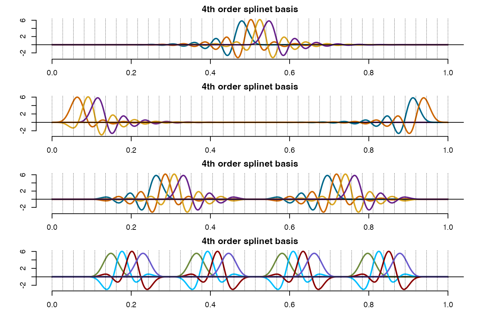
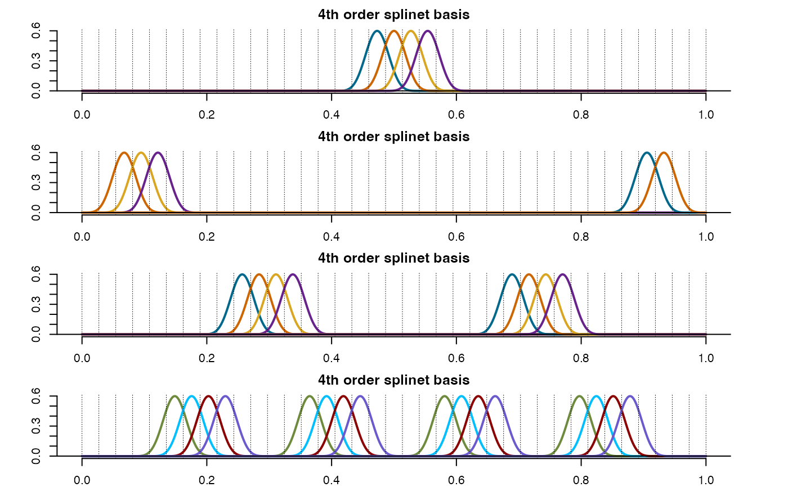
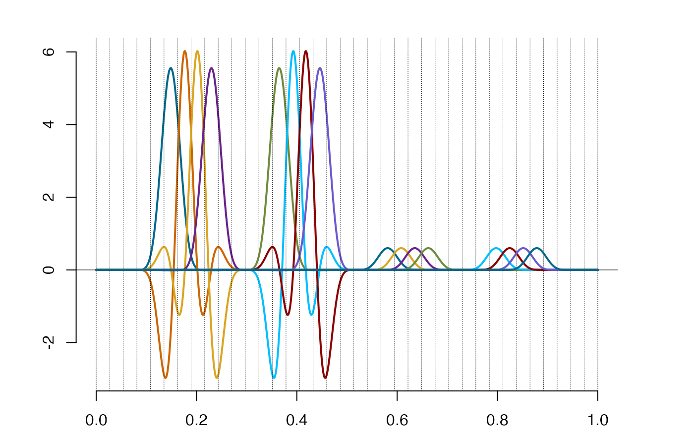

Organizing indices in a spline basis in the net form
seq2dyad.RdThis auxiliary function generates the map between the sequential order and the dyadic net structure
of a spline basis. It works only with indices so it can be utilized to any basis in the space of
splines with the zero-boundary conditions. The function is useful for creating the dyadic structure of the graphs
and whenever a reference to the k-tuples and the levels of support is needed.
Arguments
- n_sp
positive integer, the number of splines to be organized into the dyadic net; The dyadic net does not need to be fully dyadic, i.e.
n_spdoes not need to be equal to \(k2^n-1\), where \(n\) is the number of the internal knots. See the references for more details.- k
the size of a tuple in the dyadic net; It naturally corresponds to the smoothness order of splines for which the net is build.
Value
The double indexed list of single row matrices of positive integers in the range 1:n_sp.
Each vector has typically the length k and some of them may correspond to incomplete tuplets and thus can be
shorter. The first index in the list points to the level in the dyadic structure, the second one to the
the number of the tuplet at the given level. The integers in the vector pointed by the list
correspond to the sequential index of the element belonging to this tuplet.
References
Liu, X., Nassar, H., Podg\(\mbox{\'o}\)rski, K. "Dyadic diagonalization of positive definite band matrices and efficient B-spline orthogonalization." Journal of Computational and Applied Mathematics (2022) <https://doi.org/10.1016/j.cam.2022.114444>.
Podg\(\mbox{\'o}\)rski, K. (2021)
"Splinets – splines through the Taylor expansion, their support sets and orthogonal bases." <arXiv:2102.00733>.
Nassar, H., Podg\(\mbox{\'o}\)rski, K. (2023) "Splinets 1.5.0 – Periodic Splinets." <arXiv:2302.07552>
See also
plot,Splinets-method for plotting splinets in the dydadic graphical representation;
lincomb for evaluation of a linear combination of splines;
refine for refinment of a spline to a larger number of knots;
Examples
#-------------------------------------------------------#
#--The support layers of the dyadic structure of bases--#
#-------------------------------------------------------#
k=4 # order
n = 36 # number of the internal knots (excluding the endpoints)
xi = seq(0, 1, length.out = n+2)
spnt=splinet(xi,k)
plot(spnt$os) #standard plotting

plot(spnt$bs,type='dyadic') #dyadic format of plots

net=seq2dyad(n-k+1,k) #retrieving dyadic structure
ind1=c(net[[4]][[1]],net[[4]][[2]])
plot(subsample(spnt$os,ind1))
ind2=c(net[[4]][[3]],net[[4]][[4]]) #the lowest support in the dyadic net
lines(subsample(spnt$bs,ind2))
